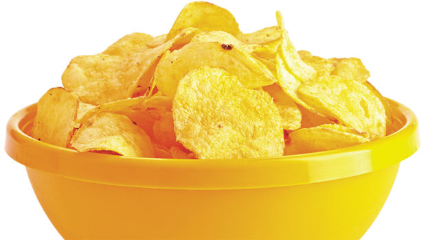

<!--new ion view and content for template-->
<ion-view>
<ion-content class="foodpage">

 <br/>
 <br/><!--line breaks-->

 <!--header bar-->
 <div class="bar bar-header bar-stable">
  <h1 class="title"><b>Crisps</b></h1>
 </div>

<!--create new div which holds an image of the food along with inline  css attributes--> 
 <div>
  
 </div>

<!--div with preformatted text and css ctyling to hold the foods ingredients-->
 <div class="foodcontent">
  <pre><!--preformatted text tag-->
 <b> Ingredients</b>
 Potatoes
 Sunflower Oil (26%)
 Caramelised Onion 
 Balsamic Vinegar
 Salt
 Firming Agent (Calcium Chloride)<!--ingredients-->
 Sugar
 Citric Acid
 Dried Onion
 Fructose
  </pre>
 </div>

 <!--button that links back to the home menu template-->
 <div>
  <button class="button button-royal" ui-sref="tabs.home">
    Back to home
  </button>
 </div>

  <!--Form controlled with radio buttons containing different calory sizes for portions, using controller-->
 <div class="list"><!--create a new list-->

  <label class="item item-radio"><!--new radio button with ng-model-->
    <input type="radio" name="group" ng-model="portion.size" value="220">
    <div class="item-content">
      Small Portion<!--text inside the button-->
    </div>
    <i class="radio-icon ion-checkmark"></i>
  </label>

  <!--second radio button-->
  <label class="item item-radio">
    <input type="radio" name="group" ng-model="portion.size" value="425">
    <div class="item-content">
      Medium Portion
    </div>
    <i class="radio-icon ion-checkmark"></i>
  </label>

<!--value displays the outputted value when clicked-->
   <label class="item item-radio">
    <input type="radio" name="group" ng-model="portion.size" value="990">
    <div class="item-content">
      Large Portion
    </div>
    <i class="radio-icon ion-checkmark"></i>
  <b><tt>CALORIES: {{portion.size | json }}</tt></b><br/><!--output with controller-->
  </label><!--last radio button closing-->

 </div><!--closing tag for list div-->
</ion-content>
</ion-view><!--close ion view and content-->
